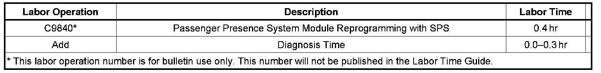

Restraints - AIr Bag Lamp ON/DTC B1000 Set
TECHNICALBulletin No.: 08-09-41-004
Date: March 12, 2008
Subject:
Airbag Light On, DTC B1000 Set (Reprogram Passenger Presence System (PPS) Module)
Models:
2008 Buick Enclave
2005-2008 Cadillac SRX
2005-2008 Chevrolet Equinox
2007-2008 GMC Acadia
2006-2008 Pontiac Torrent
2007-2008 Saturn OUTLOOK
2007-2008 Suzuki XL-7
Condition
Some customers may comment on the airbag light being illuminated.
Upon investigation, the technician may find DTC B1000 with symptom code 37 set as current or in history.
Correction
Important:
You must contact Techline to obtain a VCI number.
New software for the Passenger Presence System (PPS) has been released to disable this diagnostic check to prevent false setting of DTC B1000. Reprogram the PPS module with updated calibration files using the TIS2WEB Service Programming System (SPS) application. As always, make sure your Tech 2(R) is updated with the latest software version.
Perform a PPS rezero/preload procedure upon a successful module reprogramming event.
Warranty Information

For vehicles repaired under warranty, use the table.

Disclaimer